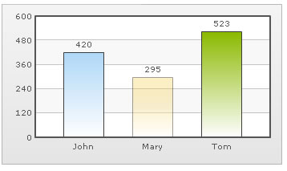
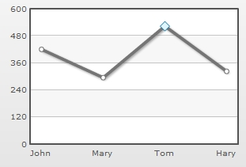
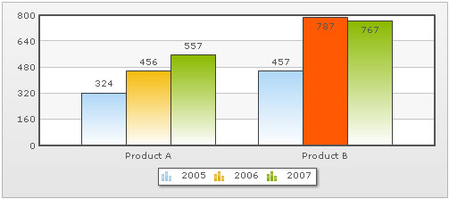

| Highlighting Selective Data | ||||
FusionCharts XT provides various options when trying to highlight selective data. Here, we will be discussing some of them, including:
Let us see all of the above one by one. |
||||
| Highlighting a dataset by changing its alpha | ||||
Highlighting data by altering its alpha is one of the simplest methods. Consider the XML below: |
||||
Here, we have set the alpha of second column to 50 (on a scale of 0-100). Now, when you see this chart, you will see that the middle column is semi-transparent making it the visual focus point. |
||||
|  |
||||
| Using dashed border to highlight data | ||||
You can also highlight a data by setting it as dashed. Consider the XML below: |
||||
|
||||
| Using individual anchor properties on a line/area chart to highlight a data | ||||
FusionCharts XT allows you to set individual <set> level anchor properties too. Consider the following XML: |
||||
<chart showValues='0'> <set label='John' value='420' /> <set label='Mary' value='295' /> <set label='Tom' value='523' anchorRadius='6' anchorSides='4' anchorBorderColor='0372AB' anchorBgColor='E1f5ff'/> <set label='Hary' value='323' /> </chart> {
|
||||
The above XML gives the following output on a Line chart: |
||||
|  | ||||
You can clearly see the highlighted anchor on the chart. |
||||
| Using individual color properties on a Multi-series chart to highlight a single data | ||||
FusionCharts XT also allows you to specify <set> level color in a Multi-series chart. Consider the XML below: |
||||
<chart> <categories> <category label="Product A" /> <category label="Product B" /> </categories> <dataset SeriesName="2005"> <set value="324" /> <set value="457" /> </dataset> <dataset SeriesName="2006"> <set value="456" /> <set value="787" color='FF5904'/> </dataset> <dataset SeriesName="2007"> <set value="557" /> <set value="767" /> </dataset> </chart> {
|
||||
In the above code, we have a Multi-series XML. We are highlighting a single <set> by setting its color explicitly. When you now see this chart, you will get the following output: |
||||
|  |